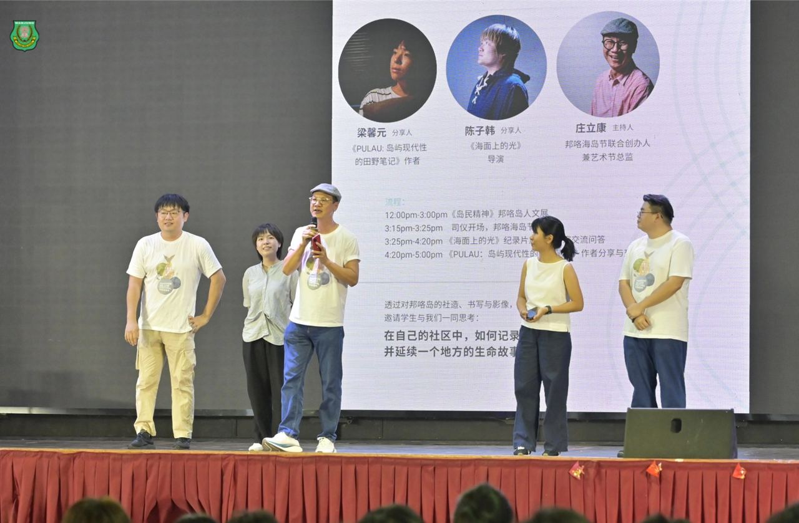
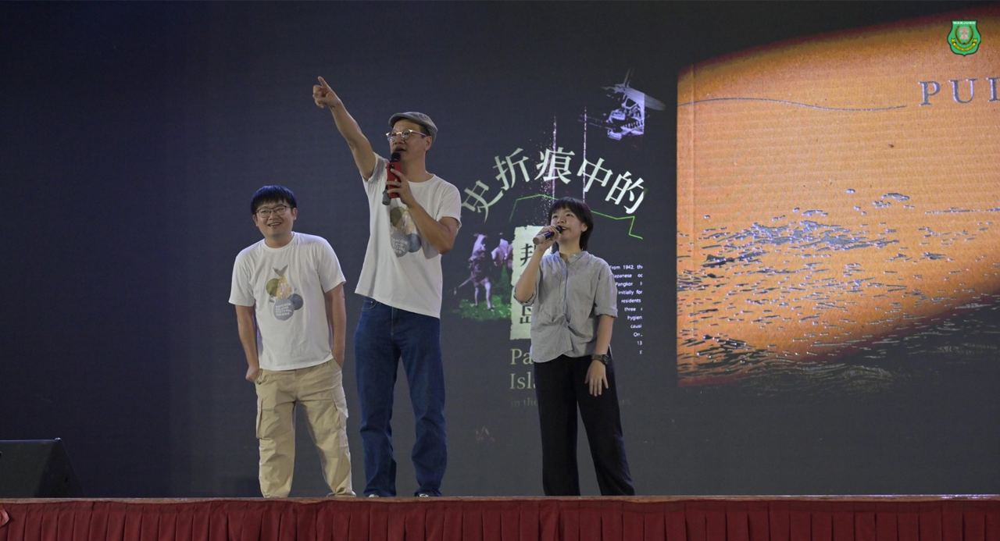
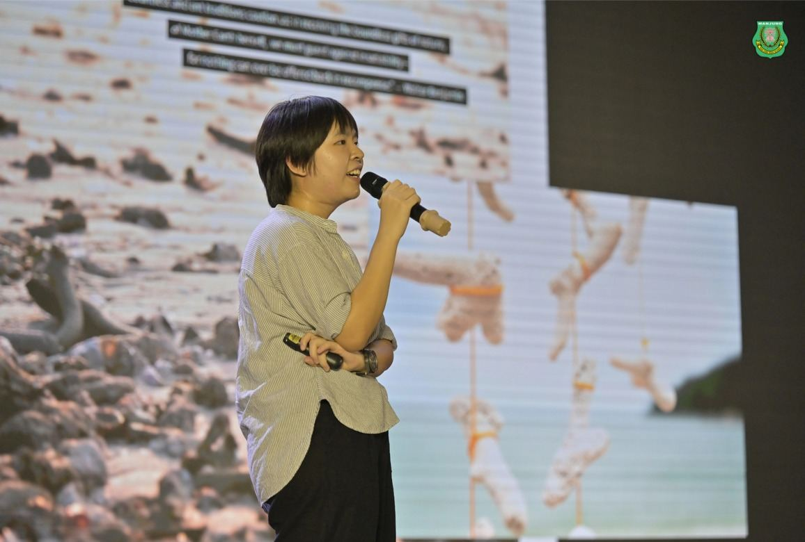
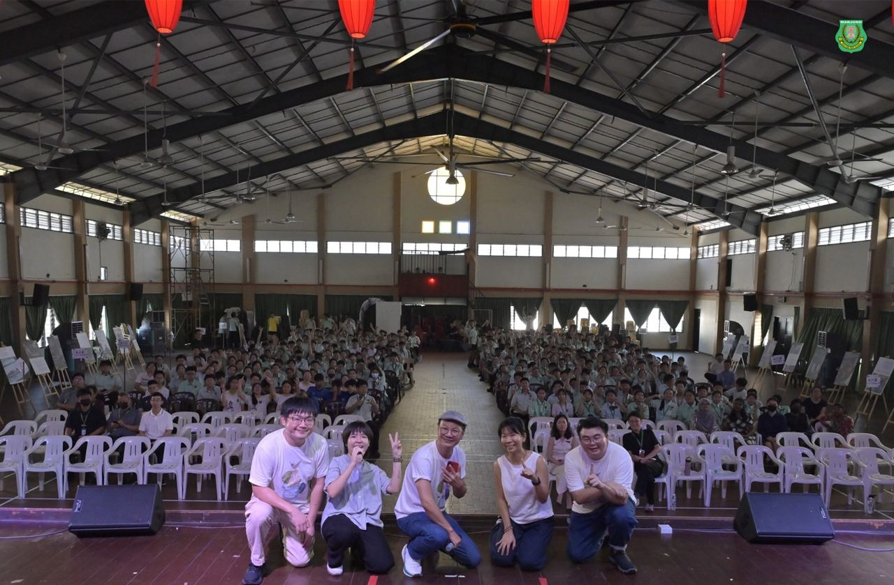
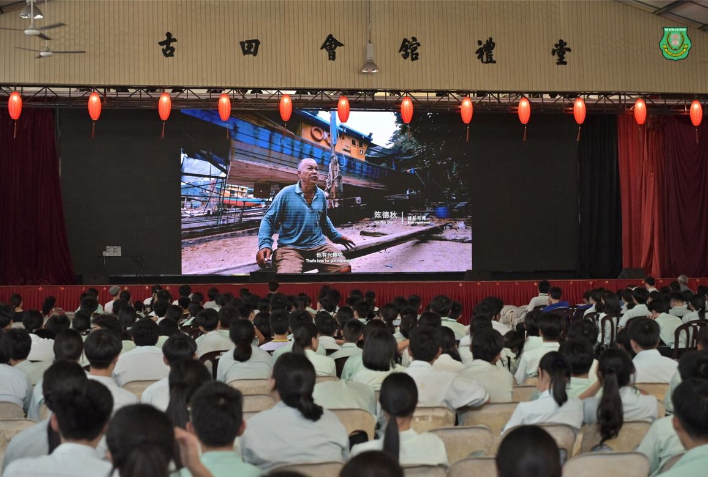
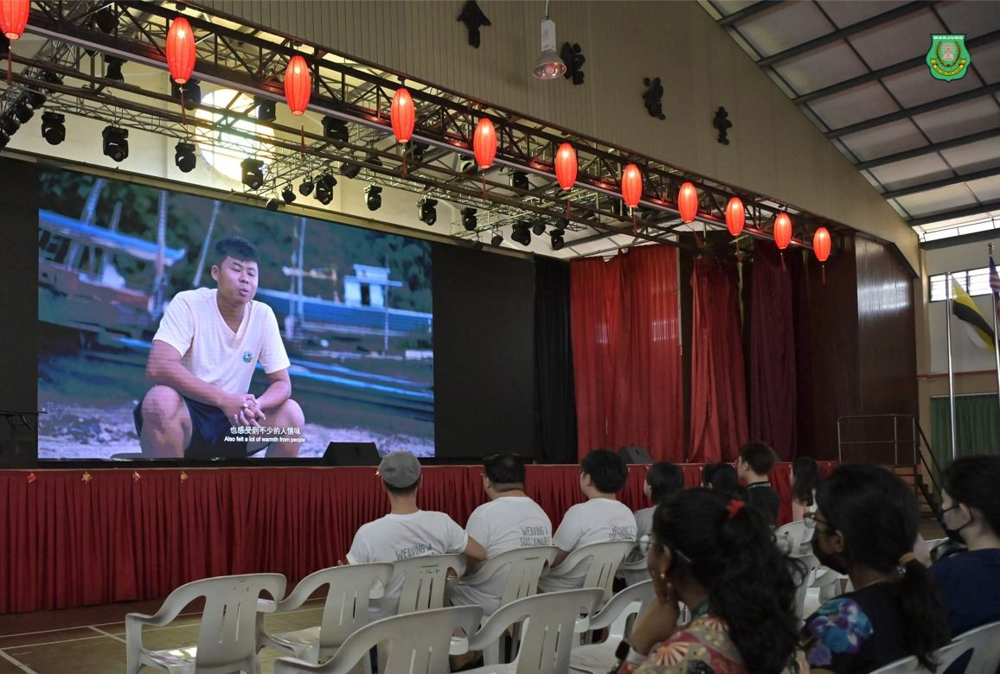
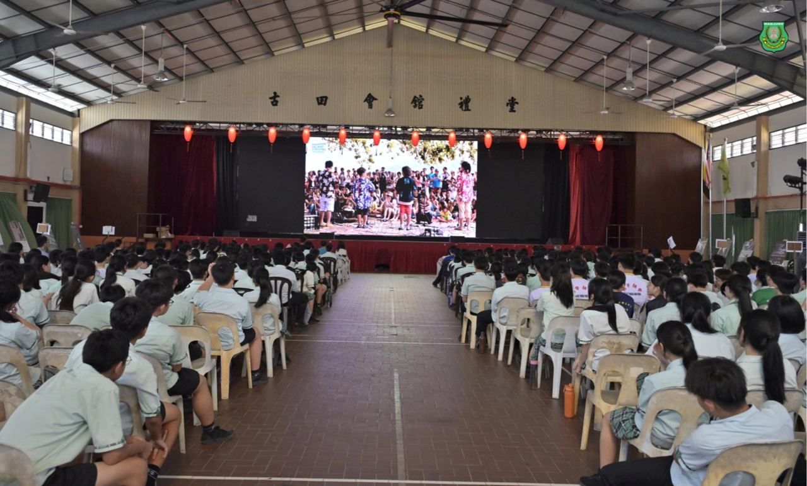

从岛屿映射到半岛上的光
从岛屿映射到半岛上的光
邦咯岛社造分享会感动南华独中师生
当文字、影像与社造思维在校园交织，一场关于“土地认同” 的觉醒正在南华学子心中萌发。本校日前成功承办校园巡回分享会——《观看岛屿：书写、摄影与营造》，邀请在地创作者带领学生跨越课本边界，重新定义对乡土的热爱。
本次活动由邦咯海岛节联合创办人兼艺术总监 庄立康 担任主持，携手《PULAU：岛屿现代性的田野笔记》作者 梁馨元 及纪录片《海面上的光》导演 陈子韩 展开深度对话。南华独中董事副总务 林道祥先生 亦亲临现场，见证这场人文与土地的对撞。
值得关注的是，由陈子韩执导的纪录片《海面上的光》除了在邦咯岛放映外，校园首映仪式安排在本校举行。镜头下渔民与海洋的共生、无情的时代巨轮与风中残烛的传统渔业的拉锯，一束束照进邦咯岛并推动海岛节的光芒，无不让现场师生深受震撼。这不仅是一次影像展示，更是教育现场对“ 非物质文化遗产”的视觉致敬。
适逢南华独中创校 90 周年，本校常年致力于打破学校与小区的围墙与这群充满理想与情怀的艺术伙伴 不谋而合，讲座会分享后更是相约共商凝聚曼绒县内热爱土地的有心人士，共同响应“社造曼绒” 行列。
此外，学生们从旁观者到参与者，在分享会结后的互动环节涌向讲台购买梁馨元的著作，并且把握机会与主讲人梁馨元探寻田野调查事宜。与此同时，导演陈子韩更是受热衷于人文关怀与纪录片拍摄学生“簇拥 ”，现场瞬间转化为热情的学术与艺术的交流会。
校长 陈丽冰 博士表示“教育源自生活·生活即是教育”，南华学生对邦咯岛屿的高度共鸣，恰好是意识到在自己生活的方土中总是缺乏一把“记录、理解并延续生命故事”的声音 ，而为了社区发声，正是作为未来领袖应具备的公共情怀。






